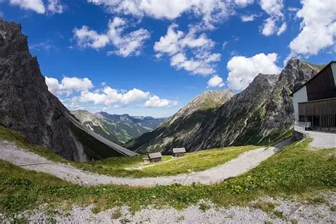

States & Regions in Austria
Select a state or regional mountain pass atlas below to view live road conditions and webcams.

Tyrol (North Tyrol)
Passes monitored: Arlberg Pass, Fern Pass, Timmelsjoch, Hahntennjoch, Kühtai Saddle, Pillerhöhe, Scharnitz Pass.
Salzburg
Passes monitored: Großglockner High Alpine Road (Hochtor), Edelweißspitze, Fuscher Törl, Gerlos Pass, Pass Thurn.
Carinthia (Kärnten)
Passes monitored: Wurzen Pass, Loibl Pass, Nassfeld Pass, Plöcken Pass, Turracher Höhe, Katschberg, Schiestelscharte.
Styria (Steiermark)
Passes monitored: Präbichl, Triebener Tauern, Sölk Pass, Niederalpl, Steirischer Seeberg, Schober Pass.
Vorarlberg
Passes monitored: Arlberg Pass, Flexen Pass, Furkajoch, Hochtannberg Pass, Bielerhöhe, Silvretta High Alpine Road.
Lower Austria (Niederösterreich)
Passes monitored: Kernhofer Gscheid, Pielachtaler Gscheid, Ochsattel, Rohrer Sattel, Semmering Pass, Wechsel.
Major Austrian Passes Directory
Direct links to live road conditions for Austria's premier alpine highways.